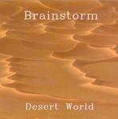

| Artist: | Brainstorm |
| Title: | Desert World |
| Label: | Independent |
| Length(s): | 72 minutes |
| Year(s) of release: | 2005 |
| Month of review: | [10/2007] |
| 1) | The Light (Eunomia Sunrise) | 11.46 |
| 2) | Occupation | 6.58 |
| 3) | Unfathomed Darkness | 4.59 |
| 4) | Mutants | 10.24 |
| 5) | Shadow Of The Past | 7.02 |
| 6) | Paradise Lost | 8.46 |
| 7) | Martian Chronicle | 7.16 |
| 8) | Goblins | 3.44 |
| 9) | Desert World | 11.22 |
Opener The Light is very much a progressive track with long instrumental sections with relatively minor space influences. Occupation is based on a groovy almost dub-type of rhythm that receives a bit more attention than it really deserves. The melodic interspersions with bluesy feel take a good step in making up for this. But still, the level reached in the opening track remains outside its reach. The tracks following this inhabit more space-type influences, and are less progressively oriented. Take Paradise Lost for example. The music is tranquil, almost sedate. The vocals peaceful, with dominant flute. Nice as this maybe, after near nine minutes the less than astute listener will be lulled to sleep. Closer Desert World is more firm, has more progressive content. It is strange to note that the two longest tracks on the disc have the strongest definition, and the least tendency to just float away.
Technically this album is far from pristine. The sound is somewhat muffled, the volume low and not constant across the album, and seems to trail off towards the end of the album.
The boys can be reached at www.brainstormtheband.com/mfraser@vtown.com.au